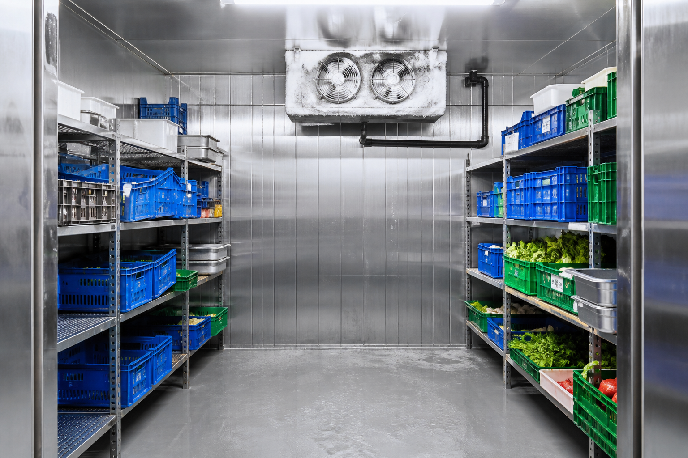

Commercial Refrigeration Engineers Enfield - 24/7 Emergency
Walk-in cold rooms, freezer rooms and cellar plant for Enfield trade kitchens. Typical response 60-90 minutes. Call 020 8050 2374.
Cold Direct attends commercial refrigeration plant in Enfield around Enfield Town, Church Street and Southbury Road. We are a North London commercial team, not a domestic network, so the van is packed for walk-in cold rooms, prep fridges, bottle coolers and cellar plant used by restaurants, pubs, hotels and shops. Sites we see most weeks include Church Street cafes, Palace Gardens kitchens and EN3 trading-estate pack rooms. Typical attendance is 60 to 90 minutes via the A10 and Great Cambridge Road, including nights and Sundays. Tell us the room or cabinet temperature, whether the fans are turning, and send a photo of the data plate if you can. We quote on site after we test the plant. If you run a second site in Edmonton, we can often cover both on the same night when the diary allows. Call 07983 759320, 0800 112 3427 or 0203 952 4822. This page is only for Enfield trade work, not a copy of another borough URL. Keep the three numbers on the duty board so night porters can reach the same diary that covers Enfield Town and Church Street.
We aim for 60 to 90 minutes for emergency commercial refrigeration in Enfield, including evenings and Sundays. Give us the postcode near Enfield Town and the current temperature when you call 07983 759320.
Yes. Edmonton sits on the same North London diary as Enfield. We cover that neighbour and the streets around Church Street and Southbury Road on the same 24/7 rota.
When a walk-in cold room in Enfield starts climbing, service is not a next-day job. Meat, dairy, prep and pastry all sit in one plant room, and a failed evaporator or a tripped roof condenser can push that space out of the chill band in a single service. Cold Direct is a commercial refrigeration team covering Enfield Town, Bush Hill Park, Ponders End, Brimsdown, Enfield Highway, Oakwood and the EN1, EN2 and EN3 postcodes. We attend restaurants, takeaways, butchers, hotels, care kitchens and cash-and-carry back rooms around the clock.
Enfield sites sit on the North Circular, the A10 and the Great Cambridge Road. That mix of high-street kitchens and industrial estates means we see both compact panel rooms behind a shop and larger pack systems on trading estates. Typical response for a cold room call in Enfield is 60 to 90 minutes, including nights and weekends. Call 020 8050 2374 and we will ask for the room temperature, whether the fans are running, and a photo of the condensing unit data plate if you can send one.
The faults we find most often in Enfield are iced evaporators after a stock delivery that blocked airflow, torn door gaskets on rooms that are opened all service, failed evaporator fans, dirty remote condensers on hot plant decks, low refrigerant after a leak, and controllers that lost their set point after a power cut. We measure air on and off the coil, check the door seal, look at how the room is loaded, and tell you in plain English if the food needs moving before a long repair.
This is commercial work only. We repair walk-in chillers, freezer rooms, dedicated chiller rooms and cellar coolers. We work on Williams, Foster, True, Polar, Blizzard, Gram and other pack systems. Brand on the door matters less than the compressor and controller on the unit. If a part is likely, we say so before we set off. We will not ask staff to smash ice with a metal bar, and we will not leave a room in an unsafe electrical state.
Enfield kitchens also sit close to Southgate, Palmers Green, Edmonton and Barnet, so one engineer can cover a group of sites if you run more than one trade address. If the cold room is holding but the cellar or freezer room is the problem, say so on the call. The same van carries gauges, leak detection, door furniture, fan motors and the common controllers we use on North London plant. Emergency cold room repair at 2am is normal work for us, not a favour.
Safety first: if you need a temporary hold, extra fans, a hired cabinet or a plan to move high-risk food, we say that before we start a long repair. Then we quote. Then we fix. Keep 020 8050 2374 on the kitchen wall next to the mobile and freephone. All three numbers are in the header, footer and buttons on this page.

Williams, Foster, True, Hoshizaki, Polar, Blizzard, Gram, Lec, Snomaster, Tefcold and other commercial pack systems.
Enfield Town, Bush Hill Park, Ponders End, Brimsdown, Enfield Highway, Oakwood, EN1, EN2, EN3, and nearby Southgate, Palmers Green, Edmonton and Barnet. North London 25 mile radius.
Barnet · Finchley · Wembley · Harrow · Edgware · Southgate · Wood Green · Tottenham · Palmers Green